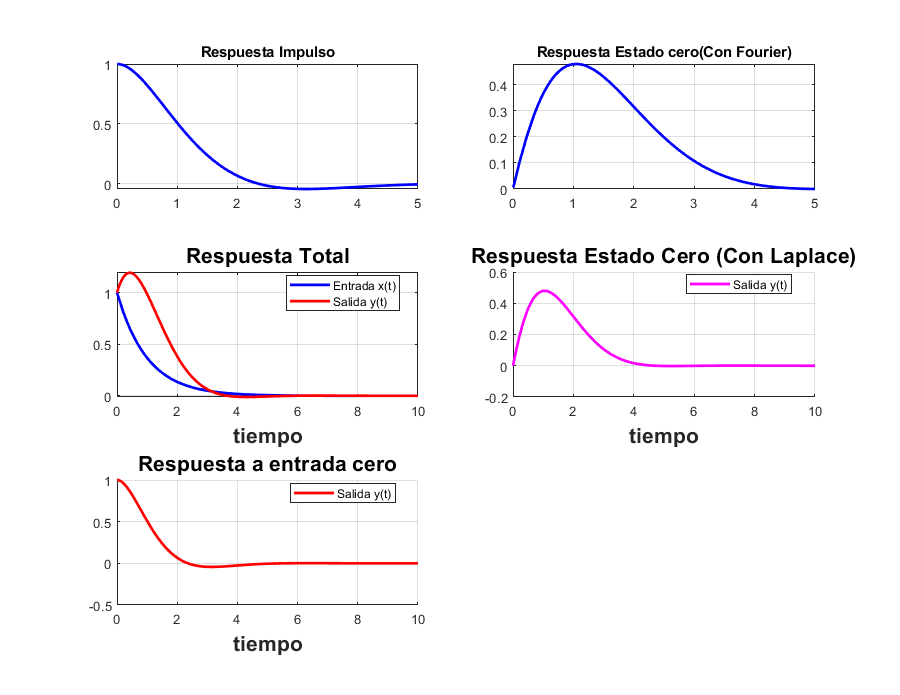

Práctica 6: Sistemas Diferenciales
Autores:
Córdova Fernández Karla Lilia, Acosta Villa Cristian Abraham.
SEÑALES Y SISTEMAS, Grupo 2TV1
Contents
Funciones usadas en esta práctica.
Programa para solución de problemas diferenciales.
Ejemplo: resolver y^(2)+2y^(1)+2y=x^(1)+2x con y^(1)(0)=0 y(0)=0, x(0)=0, x(t)=exp(-t)u(t), para 5 segundos,
Con ayuda de Fourier:
sympref('HeavisideAtOrigin', 1); FT=0; RI=0; RE0=0; t0 = 5; syms t [FT,RI,RE0] = fourier2016a([2 2 1],[2 1],exp(-t)*heaviside(t),t0); laplace20161([2 2 1],[2 1],[0,0],[0],exp(-t)*heaviside(t),10) figure(1) hFig = figure(1); set(hFig, 'Position', [0 0 900 900]) axes1 = axes('Parent',hFig,'FontWeight','bold','FontSize',16); tiempo=0:0.01:t0; subplot(2,2,1); fplot(RI,[0 t0],'b','LineWidth',2) title('Respuesta Impulso'); grid on subplot(2,2,2); fplot(RE0,[0 t0],'b','LineWidth',2) title('Respuesta Estado cero(Con Fourier)'); grid on disp('FUNCIÓN DE TRANSFERENCIA:') pretty(FT)
FUNCIÓN DE TRANSFERENCIA:
2 + w 1i
---------------
2
- w + w 2i + 2
RESPUESTA AL IMPULSO (Inversa de Fourier de la función de transferencia):
/ / 1 1 \
| pi exp(t (- 1 - i)) (sign(t) + 1) | - + -i | + pi #1 (sign(t) + 1)
\ \ 2 2 /
/ 1 1 \ \
| - - -i | + pi exp(t (- 1 - i)) dirac(t) 1i - pi #1 dirac(t) 1i |/(2 pi)
\ 2 2 / /
where
#1 == exp(t (- 1 + 1i))
APLICAMOS TRANSFORMADA DE FOURIER
2
2 Y(w) - w Y(w) + w Y(w) 2i
=
2 X(w) + w X(w) 1i
SUBSTITUIMOS LA TRANSFORMADA DE LA ENTRADA
ans =
1/(1 + w*1i)
2
2 Y(w) - w Y(w) + w Y(w) 2i
=
w 1i 2
-------- + --------
1 + w 1i 1 + w 1i
DESPEJAMOS Y(w)
Y(w)=
4 3 2
w + w 1i + 2 w + w 6i - 4
- ----------------------------
6 4 2
w + w + 4 w + 4
DESARROLLAMOS LAS FRACCIONES PARCIALES DE Y(w)
Y(w)=
/ 1 1 \ / 1 1 \
w | - - -i | + 1i w | - + -i | + 1i
\ 2 2 / \ 2 2 / - 1 + w 1i
- ----------------- + ----------------- - ----------
2 2 2
w - 2 w + 2 w + 2 w + 2 w + 1
Aplicamos transformada inversa, asi la solución es
(RESPUESTA A ENTRADA CERO)
y(t)=
/
| pi exp(-|t|) + pi #4 (sign(t) + 1) #2 + pi #3 (sign(t) + 1)
\
/ 1 1 \
#1 + pi exp(-|t|) sign(t) + pi #4 dirac(t) | - - -i |
\ 2 2 /
/ 1 1 \
+ pi #3 dirac(t) | - + -i | + pi exp(t (1 - i)) dirac(t) #2
\ 2 2 /
\
+ pi exp(t (1 + 1i)) dirac(t) #1 |/(2 pi)
/
where
1 1
#1 == - - - -i
2 2
1 1
#2 == - - + -i
2 2
#3 == exp(t (- 1 + 1i))
#4 == exp(t (- 1 - i))
Respuesta a entrada y estado cero
Para obtener la respuesta a estado cero, las condiciones iniciales tienen que ser igual a 0, es decir:
En este caso quedaria de la siguiente manera:
function laplace20161(a,b,ciy,cix,xi,t0) close all tam2=size(a); tami2=size(b); syms y(t) Y(s) x(t) X(s) Yy fp; syms edd edi edd2=0; edi2=0; for i=1:tam2(2) edd2=edd2+a(i)*s^(i-1)*Y(s); for k=1:i-1 edd2=edd2-a(i)*(s^(i-1-k)*ciy(k)); end end for i=1:tami2(2) edi2=edi2+b(i)*s^(i-1)*X(s); for k=1:i-1 edi2=edi2-b(i)*(s^(i-1-k)*cix(k)); end end mensaje('APLICAMOS TRANSFORMADA DE LAPLACE y subtituimos condiciones iniciales') pretty(edd2) disp('=') pretty(edi2) mensaje('SUBSTITUIMOS LA TRANSFORMADA DE LA ENTRADA') edi2=subs(edi2,X(s), laplace(xi)); pretty(edd2) disp('=') pretty(edi2) mensaje('DESPEJAMOS Y(s)') edd2=collect(edd2,Y(s)); edd2=subs(edd2,Y(s),Yy); eq1=edd2==edi2; disp('Y(s)=') edd2=solve(eq1, Yy); pretty(edd2) mensaje('Aplicamos transformada inversa, asi la solución es') disp('y(t)=') y2(t)=ilaplace(edd2); pretty(y2(t)) dy(t)=diff(y2,t); ddy(t)=diff(dy,t); subplot(2,2,4) hold on fplot(y2,[0,t0],'m','LineWidth',2) legend('Salida y(t)','Location','Best') xlabel('tiempo','FontWeight','bold','FontSize',16) title('Respuesta Estado Cero (Con Laplace)','FontWeight','bold','FontSize',16) grid on % Respuesta a entrada cero % % Por definición, la respuesta a entrada cero quiere decir que no tenemos % ninguna entrada al sistema, por lo que quedaría de la siguiente manera. % % $$ y''(t)+2'y(t)+2y = 0 $$, con $$ y(0-) = 1 $$ y $$ y(0)=0 $$ % tam=size(a); syms y(t) Y(s) x(t) X(s) Yy fp; syms edd edi edd=0; edi=0; ciy=[1,0] for i=1:tam(2) edd=edd+a(i)*s^(i-1)*Y(s); for k=1:i-1 edd=edd-a(i)*(s^(i-1-k)*ciy(k)); end end mensaje('APLICAMOS TRANSFORMADA DE LAPLACE y subtituimos condiciones iniciales') pretty(edd) disp('=') mensaje('SUBSTITUIMOS LA TRANSFORMADA DE LA ENTRADA') pretty(edd) disp('=') mensaje('DESPEJAMOS Y(s)') edd=collect(edd,Y(s)); edd=subs(edd,Y(s),Yy); eq1=edd==edi; disp('Y(s)=') edd=solve(eq1, Yy); pretty(edd) mensaje('Aplicamos transformada inversa, asi la solución es') disp('y(t)=') y(t)=ilaplace(edd); pretty(y(t)) dy(t)=diff(y,t); ddy(t)=diff(dy,t); subplot(2,2,3) hold on fplot(y,[0,t0],'m','LineWidth',2) legend('Salida y(t)','Location','Best') xlabel('tiempo','FontWeight','bold','FontSize',16) title('Respuesta Entrada Cero','FontWeight','bold','FontSize',16) grid on end function mensaje(texto) disp( ' ') disp(texto) disp( ' ') end
APLICAMOS TRANSFORMADA DE LAPLACE y subtituimos condiciones iniciales
2
2 Y(s) + 2 s Y(s) + s Y(s)
=
2 X(s) + s X(s)
SUBSTITUIMOS LA TRANSFORMADA DE LA ENTRADA
2
2 Y(s) + 2 s Y(s) + s Y(s)
=
s 2
----- + -----
s + 1 s + 1
DESPEJAMOS Y(s)
Y(s)=
s + 2
-------------------
3 2
s + 3 s + 4 s + 2
Aplicamos transformada inversa, asi la solución es
y(t)=
exp(-t) - exp(-t) (cos(t) - sin(t))
ciy =
1 0
APLICAMOS TRANSFORMADA DE LAPLACE y subtituimos condiciones iniciales
2
2 Y(s) - s + 2 s Y(s) + s Y(s) - 2
=
SUBSTITUIMOS LA TRANSFORMADA DE LA ENTRADA
2
2 Y(s) - s + 2 s Y(s) + s Y(s) - 2
=
DESPEJAMOS Y(s)
Y(s)=
s + 2
------------
2
s + 2 s + 2
Aplicamos transformada inversa, asi la solución es
y(t)=
exp(-t) (cos(t) + sin(t))
FUNCIÓN DE TRANSFERENCIA:
2 + w 1i
---------------
2
- w + w 2i + 2
 Referencias.
- B.P. Lathi. (2005). chapter 6.6. Linear Systems and Signals. E.U.A: Oxford University Press.